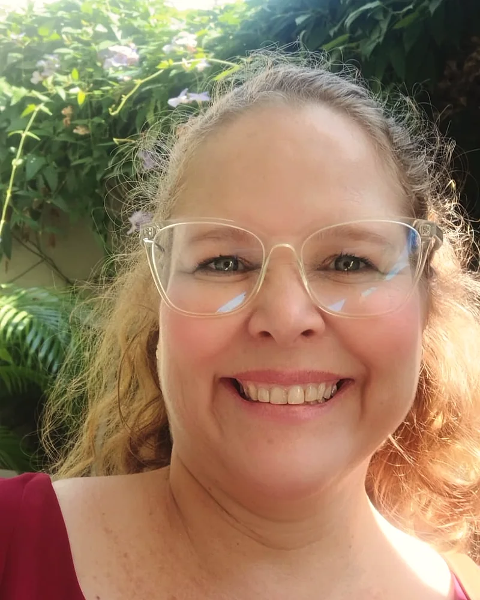
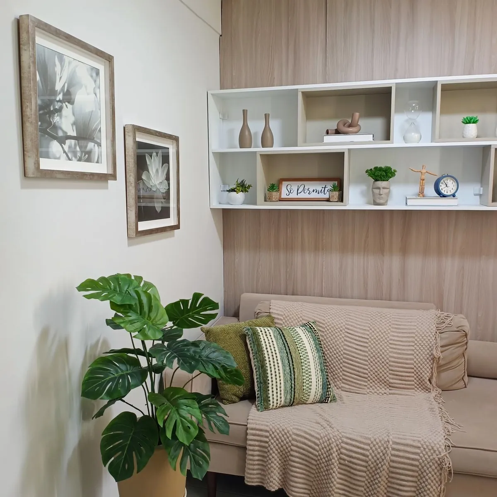

Um espaço de escuta para você, no seu tempo.
Sou psicóloga clínica e atendo pela Abordagem Centrada na Pessoa, presencialmente em Fortaleza e online. Cada pessoa entende o mundo do seu jeito, e é a partir dele que caminhamos juntos.
- Presencial no Dionísio Torres, Fortaleza
- Online, por videochamada
Como eu cuido
-
Escuta acolhedora
Um espaço sem julgamentos, onde você fala no seu ritmo.
-
Sigilo profissional
Tudo o que você compartilha é protegido pelo Código de Ética do Psicólogo.
-
Abordagem humanista
Na Abordagem Centrada na Pessoa, você conhece o seu caminho. Eu caminho ao lado.
-
Cuidado personalizado
Uso recursos de outras áreas quando fazem sentido para a sua história.

Prazer, sou a Nayane.
Sou psicóloga clínica e organizacional (CRP 11/23006). Atuo com a Abordagem Centrada na Pessoa, uma abordagem humanista que valoriza a diversidade humana. Não existe uma única forma de entender as pessoas, por isso adapto recursos de outras áreas à história de cada uma.
Durante a graduação, me apaixonei pelo trabalho com a família e pelo apoio a quem vive a ansiedade, que hoje é o meu principal foco na clínica. Tenho experiência em plantão psicológico, orientação a pais, luto reconhecido ou não, e no atendimento a gestantes e puérperas, dentro e fora do hospital.
Tenho formação em Psicologia Hospitalar e sou “Agente do Brincar”. Também sou administradora e especialista em Recursos Humanos.
Toda dor fica mais leve quando compartilhada.
Formação e experiência
- PsicólogaEspecialização em Psicologia Hospitalar, com experiência no HDGMJW
- Orientação ParentalFormação em andamento
- Plantão Psicológico1 ano e 3 meses como voluntária, com público que precisa de cuidados com ansiedade, seus desdobramentos e suicidologia
- AdministraçãoSegunda formação, com especialização em Recursos Humanos
Como posso ajudar
Você não precisa nomear o que sente para procurar ajuda. Estas são as situações que mais acompanho.
Este site não é um serviço de emergência. Em crise, ligue 188 (CVV, 24 horas, gratuito) ou 192 (SAMU).
-
Ansiedade e sofrimento emocional
Preocupação que não para, tensão no corpo, medo, tristeza e oscilações de humor. Vamos entender o que acontece e encontrar jeitos de lidar com isso, no seu ritmo.
-
Luto
Reconhecidos ou não. Perda de pessoas, ambiente de trabalho, fase de vida, animal de estimação. Dor que pode não ser percebida, causando um vazio para além de uma ansiedade. Um lugar para a sua dor ter espaço.
-
Orientação a pais e responsáveis
Apoio a quem cria filhos, inclusive crianças e adolescentes neurodivergentes, como no TEA nível 1 e no TDAH. Para entender melhor o que seu filho vive e como acompanhá-lo.
-
Gestantes e puérperas
Acolhimento para as emoções da gravidez e do pós-parto, que nem sempre cabem nas expectativas de fora.
-
Prevenção e posvenção do suicídio
Escuta cuidadosa para quem enfrenta uma dor muito intensa e para quem perdeu alguém por suicídio.
-
Autoaceitação e diversidade
Um espaço para se entender e se aceitar, com respeito à diversidade, inclusive de pessoas LGBTQIA+.
Como funciona
Do primeiro contato aos encontros seguintes, cada passo é combinado com você.
-
Você me chama no WhatsApp
Conto como funciona, tiramos dúvidas e combinamos dia e horário. Valores e formas de pagamento vão nesse mesmo contato.
-
Primeiro contato
Uma conversa para eu conhecer você, entender o que o trouxe até aqui e o que espera do processo.
-
Encontros regulares
A terapia acontece em sessões periódicas, presenciais ou online, no ritmo que faz sentido para você.
-
Revisão do caminho
De tempos em tempos, olhamos juntos para o que mudou e para o que ainda precisa de cuidado.
-
Quem atendo
Adolescentes, adultos e idosos. Pais e responsáveis, em orientação parental.
-
Como atendo
Presencial, na Clínica DEVIR, em Fortaleza, ou online, por videochamada.
-
Pagamento
Atendimento particular, sem convênios. Pix ou cartão de crédito.
Saúde mental também importa no trabalho.
Atendo colaboradores apenas de forma remota. Como psicóloga clínica e organizacional, e especialista em Recursos Humanos, converso com a sua empresa sobre o formato mais adequado.
Consultório no Dionísio Torres
Atendo na Clínica de Psicologia DEVIR, em uma sala pensada para você se sentir à vontade desde a chegada.

A entrada do prédio é pela Rua Joaquim Sá
Dionísio Torres, Fortaleza (CE), 60170-172
Dúvidas frequentes
Não encontrou o que procurava? Me chame no WhatsApp, respondo com calma.
Como funciona a primeira conversa?
É um encontro para nos conhecermos. Você conta o que quiser, no seu ritmo, e eu explico como trabalho. Ninguém precisa chegar com tudo organizado.
O que eu converso fica em sigilo?
Sim. O sigilo profissional é um dever previsto no Código de Ética do Psicólogo e vale para tudo o que você compartilha comigo. Os raros casos em que ele pode ser quebrado estão previstos em lei e no Código de Ética, e conversamos sobre isso desde o início.
O atendimento é presencial ou online?
Os dois. O presencial acontece na Clínica DEVIR, no Dionísio Torres, em Fortaleza. O online é feito por videochamada, de onde você estiver.
Você atende adolescentes e também orienta pais?
Atendo adolescentes, adultos e idosos. Também faço orientação a pais e responsáveis, inclusive de crianças e adolescentes com TEA nível 1 ou TDAH.
Atende por convênio? Quanto custa?
O atendimento é particular, sem convênios. Os valores e as formas de pagamento são informados no primeiro contato, pelo WhatsApp.
E se eu estiver em crise agora?
Este site não é um serviço de emergência. Ligue 188 (CVV, 24 horas, gratuito) ou 192 (SAMU), ou procure a unidade de pronto atendimento mais próxima.
Estaremos juntos neste caminho.
Envie uma mensagem e combinamos um horário. Você não precisa contar nada agora.